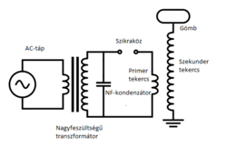
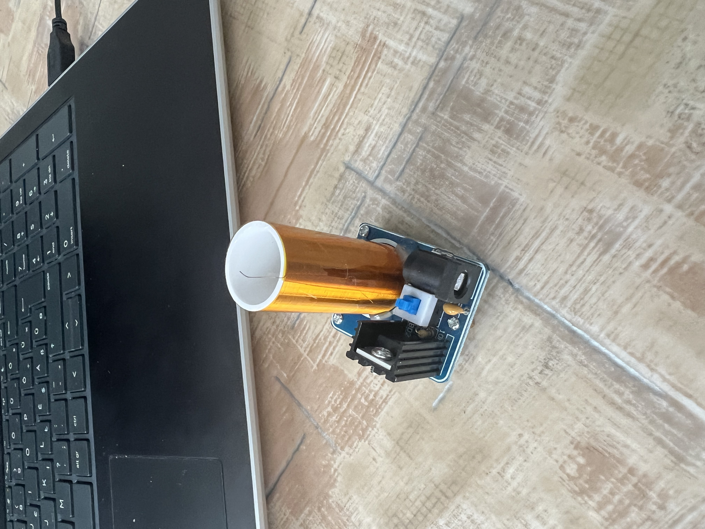

Mini Tesla Projekt
A Tesla tekercs egyfajta elektromos áramkör, amelyet nagyfeszültségű, alacsony áramú, nagyfrekvenciás váltakozó áramú elektromosság előállítására használnak. Nevét feltalálójáról, Nikola Tesláról kapta, aki 1891-ben szabadalmaztatta az eszközt. A Tesla tekercseket általában elektromos, vezeték nélküli energiaátviteli és egyéb, nagyfrekvenciás elektromos energiát igénylő alkalmazásokhoz használják. Ezek egy primer tekercsből és egy szekunder tekercsből állnak, mindegyik saját kondenzátorral. Amikor a primer tekercsre nagyfeszültségű áramot vezetnek, az áramot indukál a szekunder tekercsben, és nagyfeszültségű, nagyfrekvenciás kimenetet hoz létre.
A Tesla tekercsnek két fő alkalmazása van: a rádiós kommunikáció és a tudományos kutatás. Lehetővé teszi a kommunikációs rendszerek számára, hogy nagymértékben növeljék a hatótávolságukat. A Tesla tekercs segítségével olyan jelenségek figyelhetők meg, mint az elektromos töltések mozgása és a rádióhullámok terjedése.
A Tesla tekercsnek van egy másik hasznos alkalmazása is, ami a látványos elektromos és mágneses jelenségek generálása. A Tesla tekercsnek köszönhetően látványos elektromos és mágneses jelenségek jelenhetnek meg, mint például a villódzó és ágaskodó elektromos kisülések.
Mivel távközlés technikusnak tanulok, így elengedhetetlen, hogy építsek Tesla tekercseket. A rádiózás alapját képzi, ahogy a fentiekben is írtam. Először valami nagyon egyszerű verziót kerestem, és így erre az olcsón megvásárolható kis egységcsomagra esett a választásom. Az áramkör egyszerűsége és a lehetséges hibák elkerülése volt a fő szempontom, és ez a kapcsolás csak pár alkatrészt igényelt.
Az általam épített KIT:

Ez egy Mini Tesla transzformátor KIT, BD243C tranzisztorral.
A KS-001 készletből egy mini tesla tekercset építhetünk, amely elektromágneses teret generál maga körül, aminek hatására a közvetlen közelébe helyezett nemesgázzal töltött glimm lámpa (külső tápegység nélkül) a kezünkben világítani kezd.
Működtethető tápegységről vagy akkumulátorról is.
Műszaki adatok:
- Működési feszültség: 9...12V DC
- Maximális áramfelvétel: 660mA
- Elkészítési idő: 15 perc
- Méretek: 40 x 31 x 49mm
Az összeszereléshez szükséges még:
- forrasztópáka és ón,
- oldalcsípő fogó,
- Phillips fejű csavarhúzó
Az összeszerelési dokumentációt innen le lehet letölteni PDF fájlként.
A kapcsolási rajza:


az első képen látható az alkatrészek amelyeket használtam
ez itt a kapcsolási rajz

második képen a breadboard látható

itt a kész tesla tekercs látható
és itt is
Nikola Tesla
Az 1980-as években kezdett foglalkozni vele.
Főbb paraméterek
Működési feszültség: 9...12V DC
Maximális áramfelvétel: 660mA
Elkészítési idő: 15 perc
Méretek: 40 x 31 x 49mm
Hogyan működik?
A Tesla tekercsnek köszönhetően látványos elektromos és mágneses jelenségek jelenhetnek meg, mint például a villódzó és ágaskodó elektromos kisülések